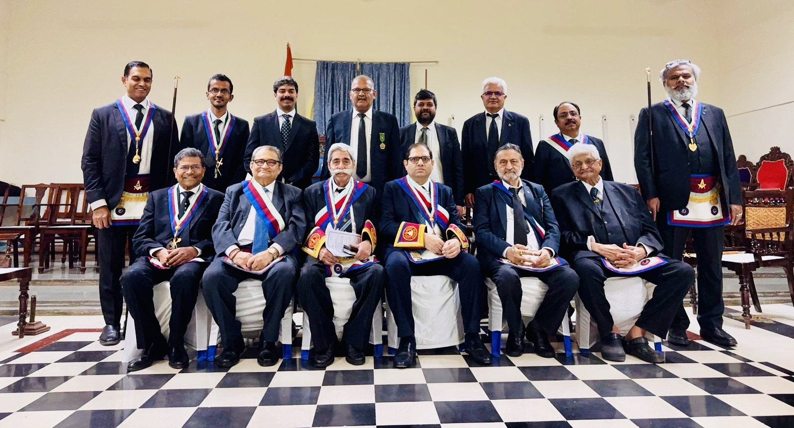

Lodge Al-Ameen No. 1412 SCAntient Free and Accepted Masons · Bangalore

Constituted 7 February 1946 · In Bangalore since 2010
I, along with the brethren of Lodge Al-Ameen, warmly welcome you to our website.
For eight decades we have upheld the timeless values of Freemasonry — brotherhood, integrity, and service. Constituted in Mumbai in 1946 under the Grand Lodge of Scotland, and at labour in Bangalore since 2010, we carry the traditions of Scottish Freemasonry forward through our meetings, our charitable work, and the fellowship of our brethren.
Whether you are a brother from another jurisdiction or a man curious about Freemasonry, we invite you to explore our pages and reach out.
Constituted in Mumbai on 7 February 1946, with His Highness Sir Sayed Raza Ali Khan, Nawab of Rampur, enrolled as the first founding member. The warrant was transferred to Bangalore in 2010.
Read our history →A space for men of good character to connect, learn, and grow — through ritual, intellectual discourse, and lifelong friendship across professions and communities.
About membership →Charity is central to the Craft. The Lodge supports charitable causes in Bangalore and contributes to the wider work of Scottish Freemasonry in India.
Get in touch →Regular meetings are held on the third Tuesday of January, March, May, July, September and November at 6:00 PM. Visiting brethren are always welcome.